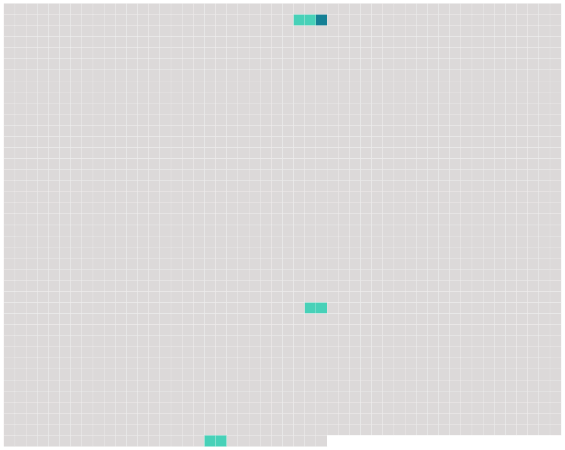

Longueur nb maillons : 4 mentions |
|
La noble religieuse lui parla à travers la grille du cloître avec plus de force encore et d’ autorité que dans leurs anciennes entrevues ; elle ne put rien sur sa politique, mais elle l’ adoucit un peu envers sa femme, et c’ est un soir, en revenant du couvent des filles de Sainte-Marie, que, forcé par un orage de ne pas retourner à Saint-Maur, et de passer la nuit [au Louvre] [où] était la reine, Louis XIII donna Louis XIV à la France. [25 phrases] Puis elle -même, elle se déguise en grisette, barbouille son beau visage, cache ses blonds cheveux sous une grande coiffe, et de grand matin, quand personne n’ est encore éveillé [au Louvre] , elle en sort à la dérobée, prend un fiacre et se fait conduire à la Bastille. [22 phrases] » Mlle de Hautefort fut assez heureuse pour n’ être pas plus reconnue en rentrant [au Louvre] que le matin lorsqu’ elle en était sortie. |
 |
Il est possible de télécharger la ressource sur la page Ortolang |
Si vous avez des questions ou vous voyez des erreurs, merci d'envoyer un mail à silvia.federzoni89@gmail.com |